D2F · Staff UI ReviewD2F Global · Staff workspace
Actual Android emulator captures of the refreshed Milestone 1 screens. Typography, illustrations and colors follow the supplied design references. Registration, tracking, status updates and history use the existing backend.
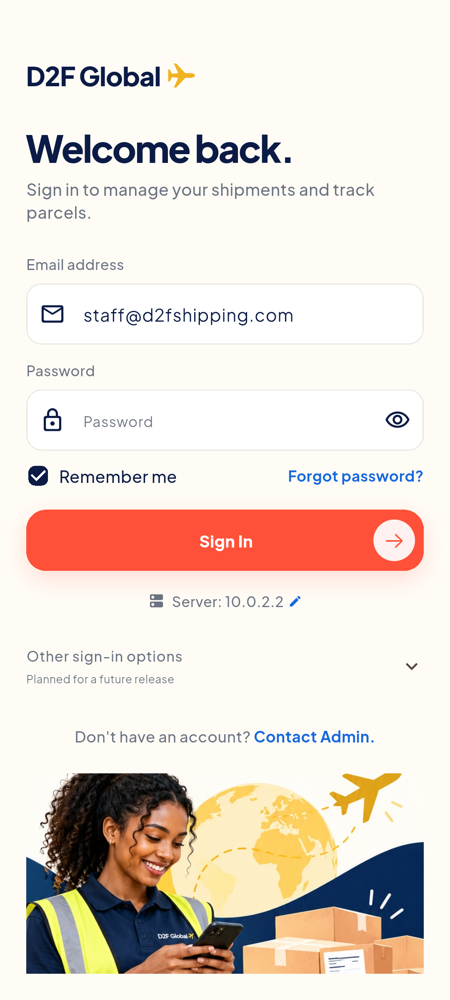
Staff sign-in Staff dashboard
Staff dashboard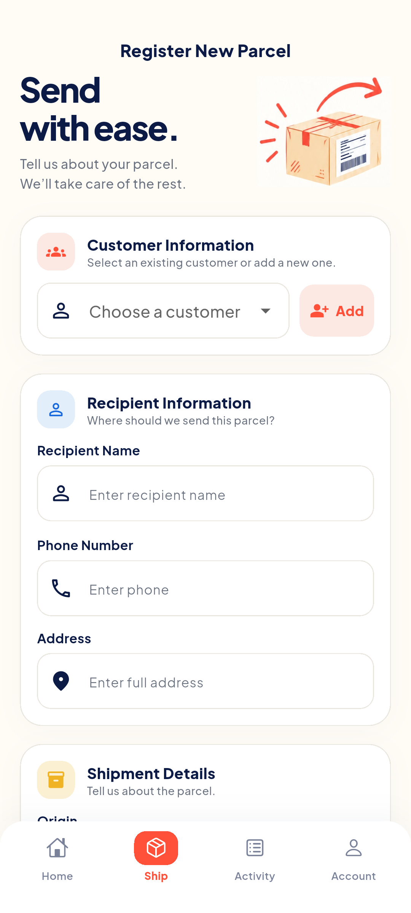
Parcel intake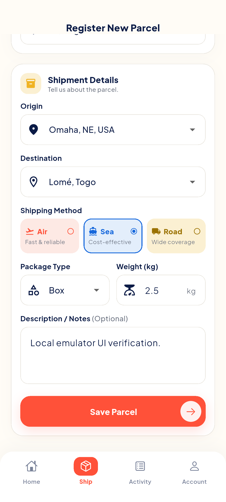
Shipment details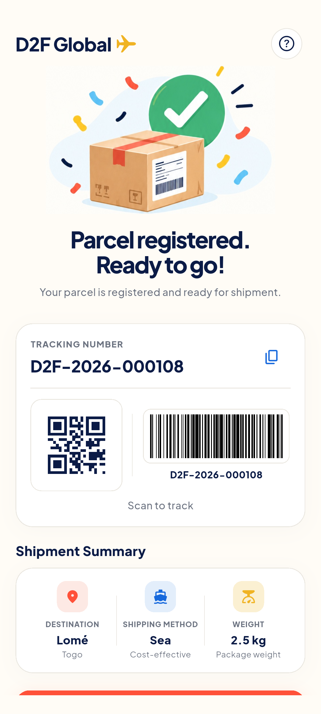
QR and barcode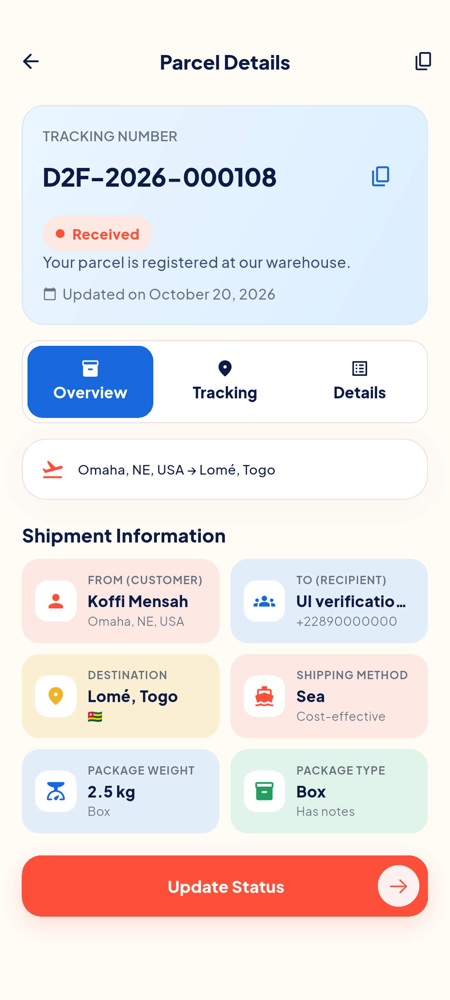
Parcel overview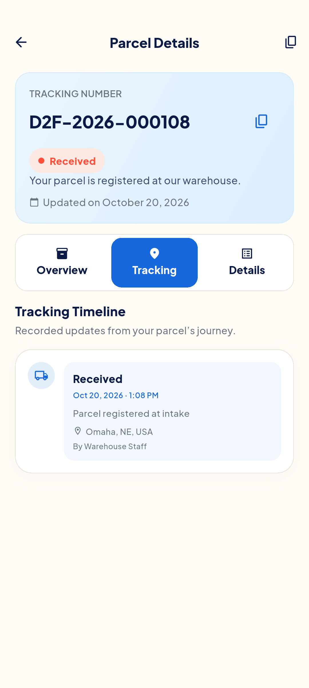
Recorded tracking events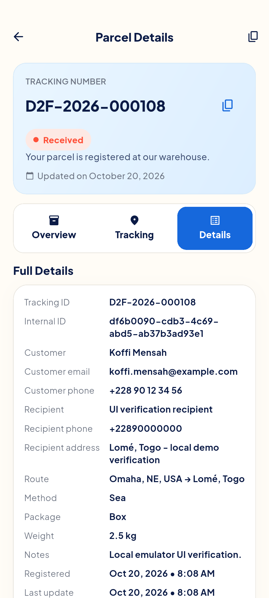
Parcel details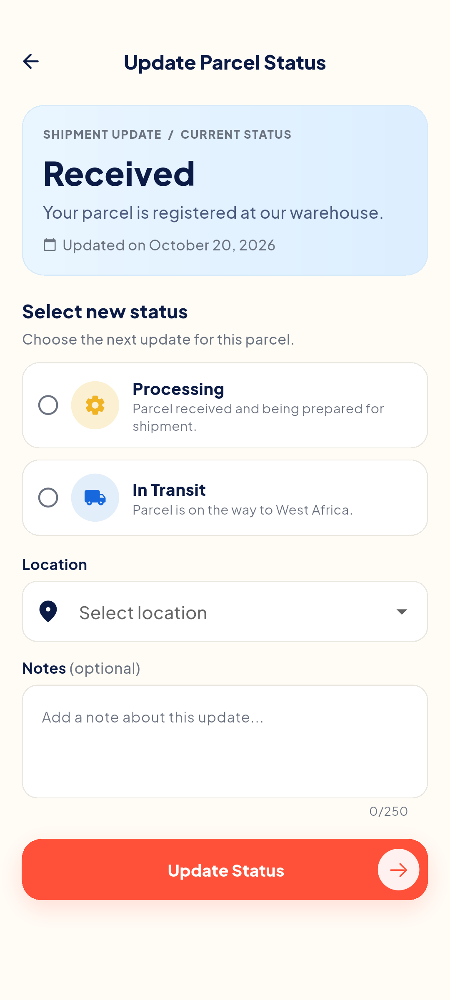
Allowed status updates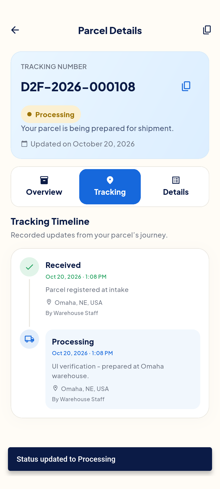
Saved event history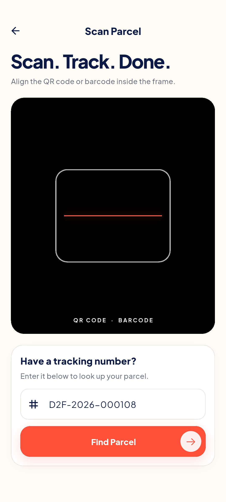
Scan and manual lookup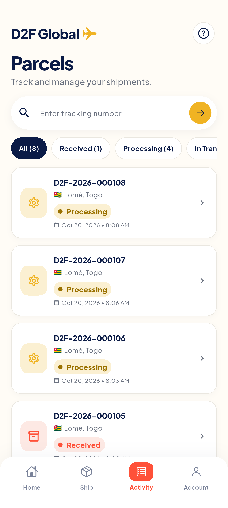
Parcel records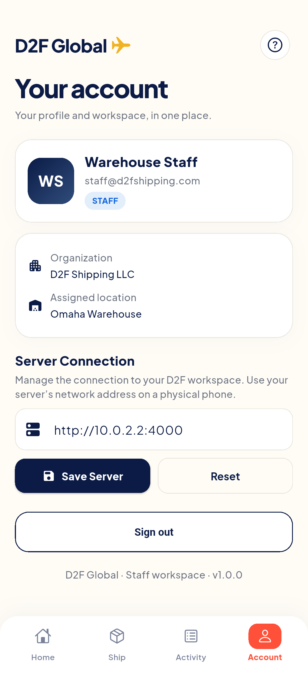
Staff account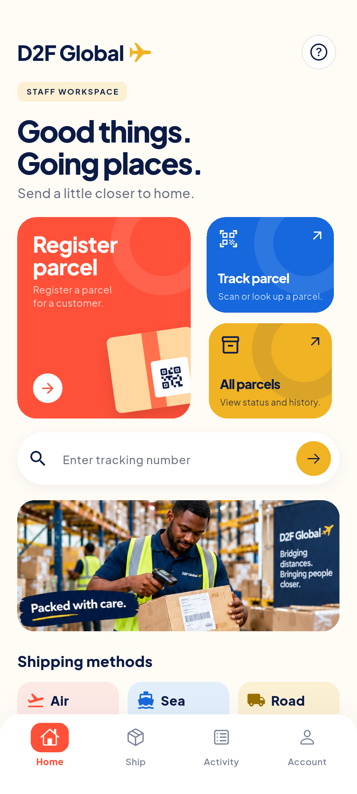
Restored session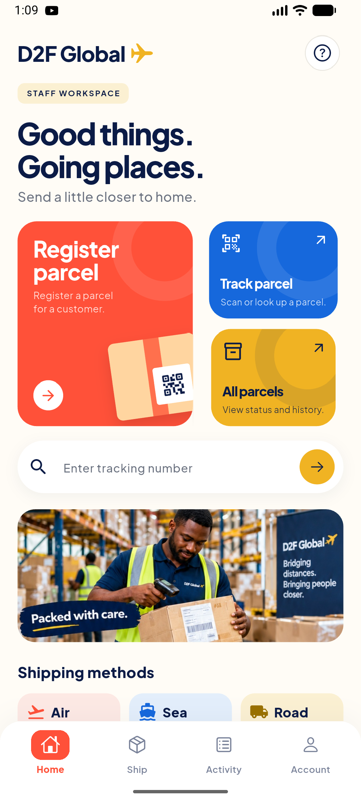
Normal app after restart